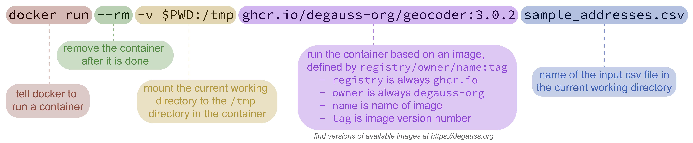
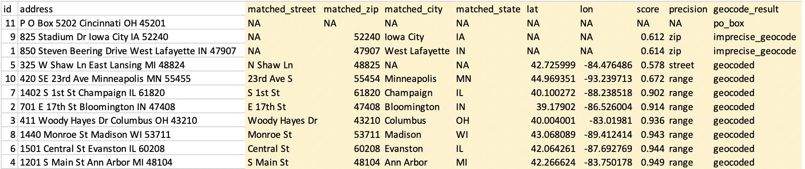
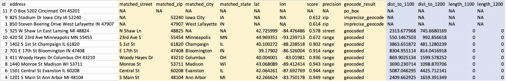
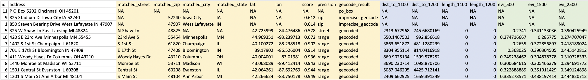

Installing Docker
Getting started with Docker requires installing “Docker Desktop” on a Windows or macOS machine or a “Docker Engine” on a Linux operating system. Follow the official installation instructions specific to your operating system. Docker also has detailed installation guides, user manuals, and troubleshooting for both macOS and Windows.
To test your installation, open a shell and run
docker run hello-world. (See the next section for details
on using a shell for command line instructions if you are unfamiliar.)
You should see some output describing what Docker did and that it is
working correctly:
$ docker run hello-world
Unable to find image 'hello-world:latest' locally
latest: Pulling from library/hello-world
ca4f61b1923c: Pull complete
Digest: sha256:ca0eeb6fb05351dfc8759c20733c91def84cb8007aa89a5bf606bc8b315b9fc7
Status: Downloaded newer image for hello-world:latest
Hello from Docker!
This message shows that your installation appears to be working correctly.
...Notice that after asking Docker to run a container, if it does not find the image locally, it downloads it from an online repository. This is only necessary the first time you run a container from each image. Once downloaded, Docker will continue to use the same local image to create containers.
Command Line
If you are comfortable using the command line, please skip to DeGAUSS Commands.
DeGAUSS is operated through a command line interface by using a shell to issue Docker commands. If using macOS, access the command line by opening the “Terminal” application. For Windows, use the “Command Prompt” (sometimes abbreviated as “CMD”) or “Windows Powershell”. An alternative on Windows is to use a Linux shell through the Windows Subsystem for Linux.
Commands typed into a shell operate relative to a “working directory”. This allows us to access the input file by specifying its name without the full path including all parent folders/directories, but this requires us to first navigate to the directory on our computer where the input file is located.
After opening a new shell, navigate to the folder/directory where the
input file is stored by using the cd command (for
change directory). For example, use
cd Users/Alice/Documents/my_project to change to the
my_project directory in Alice’s
Documents folder. (File/folder browsers in macOS and
Windows often have a secondary click contextual menu option to copy the
path to the current folder, which is usefuly for constructing
cd commands in a shell.)
For more information on the command line, see these useful tuturials for macOS and Windows.
After succesfully navigating to the folder where the input file is stored, you are ready to use a DeGAUSS command.
DeGAUSS Commands
DeGAUSS commands are essentially Docker commands with some specified arguments. Below, an example command is broken into color-coded annotated sections.

To use this generally for any DeGAUSS application,
my_address_file.csv would be replaced by the name of your
csv file located in the current working directory of your shell.
geocoder and 3.0.2 would be replaced by the
name and version, respectively, of the degauss container you would like to
run.
One caveat for using DeGAUSS commands on Windows is the use of the
$PWD variable, which relies on the convention that the
shell will evaluate this as the current working directory. If using
Windows Command Prompt (but not Windows Powershell or Windows Subsystem
for Linux), this variable is not present and instead must be changed to
%cd%. Windows Powershell users may have to use
${PWD}, please see here for more details on
$PWD for different Windows operating systems.
Geocoding
Input address data formatting
Addresses must be stored as a CSV file and follow these
formatting requirements:
- Other columns may be present, but it is recommended to only include
addressand an optional identifier column (e.g.,id). Fewer columns will increase geocoding speed. - Address data must be in one column called
address. - Separate the different address components with a space
- If you are editing your .csv file using something other than Excel and you have commas in your address, make sure the full address is in quotes
- Do not include apartment numbers or “second address line” (but its okay if you can’t remove them)
- ZIP codes must be five digits (i.e.
32709) and not “plus four” (i.e.32709-0000) - Do not try to geocode addresses without a valid 5 digit zip code; this is used by the geocoder to complete its initial searches and if attempted, it will likely return incorrect matches
- Spelling should be as accurate as possible, but the program does complete “fuzzy matching” so an exact match is not necessary
- Capitalization does not affect results
- Abbreviations may be used (i.e.
St.instead ofStreetorOHinstead ofOhio) - Use arabic numerals instead of written numbers (i.e.
13instead ofthirteen) - Address strings with out of order items could return NA
(i.e.
3333 Burnet Ave Cincinnati 45229 OH)
Using the DeGAUSS geocoder
Make sure Docker is running and open a new shell.
Navigate to the directory where your address file is located.
Enter the DeGAUSS command. See the example below:
If my_address_file.csv is a file in the current working
directory with an address column named address, then
docker run --rm -v $PWD:/tmp ghcr.io/degauss-org/geocoder my_address_file.csvwill produce my_address_file_geocoded_v3.0.csv with
added columns including lat, lon, and
geocoding diagnostic information.
Note: DeGAUSS geocoded 50,000 addresses in about 30 minutes using Docker Desktop with 6 CPUs and 10 GB of shared memory on a 15-inch, 2019 MacBook Pro with a 2.6 GHz Intel Core i7 processor.
Interpreting geocoding results
The geocoder’s output file includes the following columns:
matched_street,matched_city,matched_state,matched_zip: matched address componets (e.g.,matched_streetis the street the geocoder matched with the input address); can be used to investigate input address misspellings, typos, etc.For more detailed information on the interpretation of the geocoding results, please see degauss.org/geocoder
Geomarker Assessment
The geomarker assessment images will only work with the output of the
geocoding docker image (or a CSV file with columns named
lat and lon). Similar to before, navigate to
the directory where the geocoded CSV file is located. If you are running
geomarker assessment right after geocoding and using the same shell, the
files will be in the same location, so no further navigation is
necessary.
Run:
docker run --rm -v "$PWD":/tmp ghcr.io/degauss-org/<name-of-image> <name-of-geocoded-file>Continuing with our usage example, if we wanted to calculate the distance to the nearest road and length of roads within a 400 m buffer for each subject, we could use the degauss/roads image:
docker run --rm -v "$PWD":/tmp ghcr.io/degauss-org/roads my_address_file_geocoded.csvDocker will emit some messages as it progresses through the
calculations and will again write the file to the working directory with
a descriptive name appended, in this case the distance to nearest
primary (dist_to_1100) and secondary
(dist_to_1200) roads and the length of primary
(length_1100) and secondary (length_1200)
roads within a 400 m buffer.
Again, our output file will be written into the same directory as our
input file. In our example above, this will be called
my_address_file_geocoded_roads.csv:
| id | address | lat | lon | dist_to_1100 | dist_to_1200 | length_1100 | length_1200 |
|---|---|---|---|---|---|---|---|
| 131 | 1922 CATALINA AV CINCINNATI OH 45237 | 39.17112 | -84.46176 | 502.7 | 534.8 | 0 | 0 |
| 540 | 5358 LILIBET CT DELHI TOWNSHIP OH 45238 | 39.11552 | -84.61902 | 5793.1 | 1654.7 | 0 | 0 |
| 112 | 630 GREENWOOD AV CINCINNATI OH 45229 | 39.15321 | -84.49236 | 1453.0 | 548.5 | 0 | 0 |
Please note that the geomarker assesment programs will return
NA for geomarkers when coordinate values are missing.
Missing coordinate values are possible if the geocoding container failed
to assign them, for example, when using a malformed address string. A
user should verify that the address strings have been recorded
correctly; however, geocoding sometimes fails even with a correctly
supplied address due to inconsistencies and inaccuracies in the street
range files provided by the census.
Removing PHI
Now that we have our desired geomarkers, we can remove the addresses and coordinates from our output file, leaving only the geomarker information that will be associated with health outcomes in a downstream analysis:
| id | dist_to_1100 | dist_to_1200 | length_1100 | length_1200 |
|---|---|---|---|---|
| 131 | 502.7 | 534.8 | 0 | 0 |
| 540 | 5793.1 | 1654.7 | 0 | 0 |
| 112 | 1453.0 | 548.5 | 0 | 0 |
In theory, since this file no longer contains any PHI, it is no longer subject to HIPAA and can be shared with others or used with third party online services. In reality, we are applying the “Safe Harbor” method defined by HIPAA for deidentification, but re-identification is certainly possible when enough geomarkers and non-identifying information are combined together. Do not take the use of DeGAUSS as a guarantee of deidentification and please consult your institution for more information relating to their specific policies around sharing data.
A Sample Workflow
Below is a step-by-step workflow used to estimate the length and proximity of major roadways as well as nearby greenness for a set of addresses.
For an animated GIF of these commands, check out the DeGAUSS homepage.
- Start with your addresses in a .csv file, with the complete address in one column called “address”. For this example, that file will be called “sample_addresses.csv”.

- Use a DeGAUSS Docker command to geocode the addresses using version 3.0.2 of “degauss/geocoder”. If you have not previously used this version of this image, Docker will first download it, which can take several minutes, depending on the size of the image and internet speeds. Docker will then create and run a container to geocode the addresses.
docker run --rm -v $PWD:/tmp ghcr.io/degauss-org/geocoder sample_addresses.csv- The results file, called “sample_addresses_geocoded_3.3.0_score_threshold_0.5.csv”, will be written to the same folder where the input CSV file is located. This file is the same as the input CSV file, but with appended columns for matched address components, geocoding score and precision, latitude, longitude, and a categorical geocoding result. See Interpreting geocoding results for more information on the geocoding results.

- Now that we have geocoded addresses, we can use DeGAUSS to add a geomarker. In this example we will use the DeGAUSS images for the proximity to major roadways and greenspace, DeGAUSS/roads version 0.1 and DeGAUSS/greenspace version 0.2. The programs can either be run in parallel on the geocoded file or they can be run sequentially, creating one file with both geomarkers. Here, we first added the roadway geomarker and then add greenspace to that result. This is done using the following commands while in the directory of the geocoded .csv file:
docker run --rm -v "$PWD":/tmp ghcr.io/degauss-org/roads sample_addresses_geocoded_3.3.0_score_threshold_0.5.csv
docker run --rm -v $PWD:/tmp ghcr.io/degauss-org/greenspace sample_addresses_geocoded_3.3.0_score_threshold_0.5_roads_400m_buffer.csv
- These two DeGAUSS containers append new columns to our dataset with their respective geomarkers, while keeping intact our original dataset. Now that we have added our geomarkers, we can remove the addresses to create a geomarker dataset without geographic PHI.